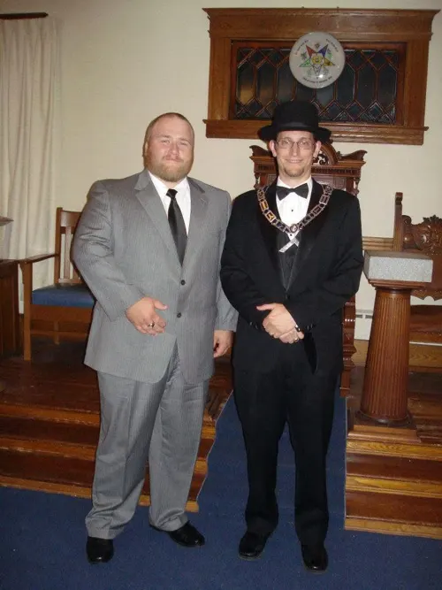

Grand Lodge of Connecticut & Columbia Lodge No. 25
June, c. 2011–12 (year to confirm) · South Glastonbury, Connecticut
Draft pending George

Masonic fellowship, one of the noble traditions of our Craft. This past June I had the great pleasure of touring the Grand Lodge of Connecticut, afterwards the RW Grand Secretary Robert G. Fitzgerald invited me to attend a Master Mason Degree at his Lodge, Columbia Lodge No. 25 A.F. & A.M. in South Glastonbury, Connecticut.
I was warmly welcomed by WM Michael E. Hudson and by my Connecticut brothers. I had a very enjoyable evening, one I’m sure to remember for many years to come.
I highly recommend taking the time to fellowship whenever possible, the gain is sometimes immeasurable.